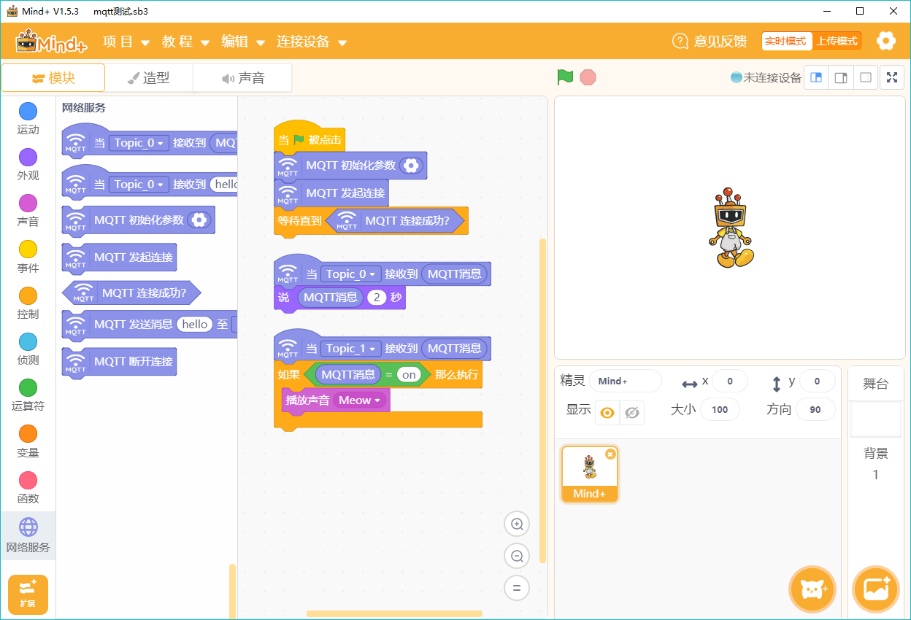

3. Mind plus¶
3.1. 简介与安装¶
Mind plus（Mind+）支持两种编程模式，一是实时交互模式，二是离线下载模式。实时交互模式类似普通的Scratch程序，离线下载模式则是指给Arduino、掌控板写程序。
这里介绍的是“”实时交互模式”下的MQTT范例。Mind+可以直接访问MQTT服务器，和其他接入MQTT服务器的智能硬件进行交互。
注意： Mind+在1.55版后才支持MQTT功能，请下载最新版本。
3.2. 编程步骤¶
实时交互模式
1）在“实时模式”下选择“扩展”，找到网络服务，选择MQTT。
2）在MQTT中，找到相应的语句开始编程。
代码功能简介
当Topic_0（在MQTT服务器中设置）收到一条消息，小机器人就开始说话，将消息显示在对话气泡中。
当Topic_1收到一条内容为“on”的消息，小机器人发出猫叫声。
离线下载模式
1）在“上传模式”下选择“扩展”，找到对应的主控板，再到网络服务中选择MQTT和WIFI。
2）示例代码如下，需要修改WIFI和MQTT的对应参数
代码功能简介
发送端：当与服务器成功连接后，不断发送信息到服务器